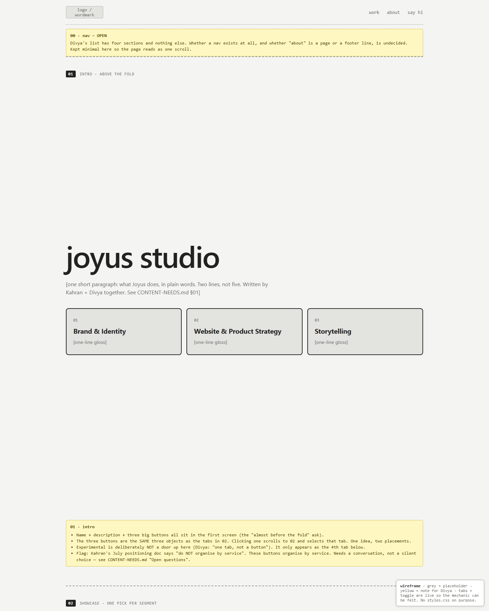
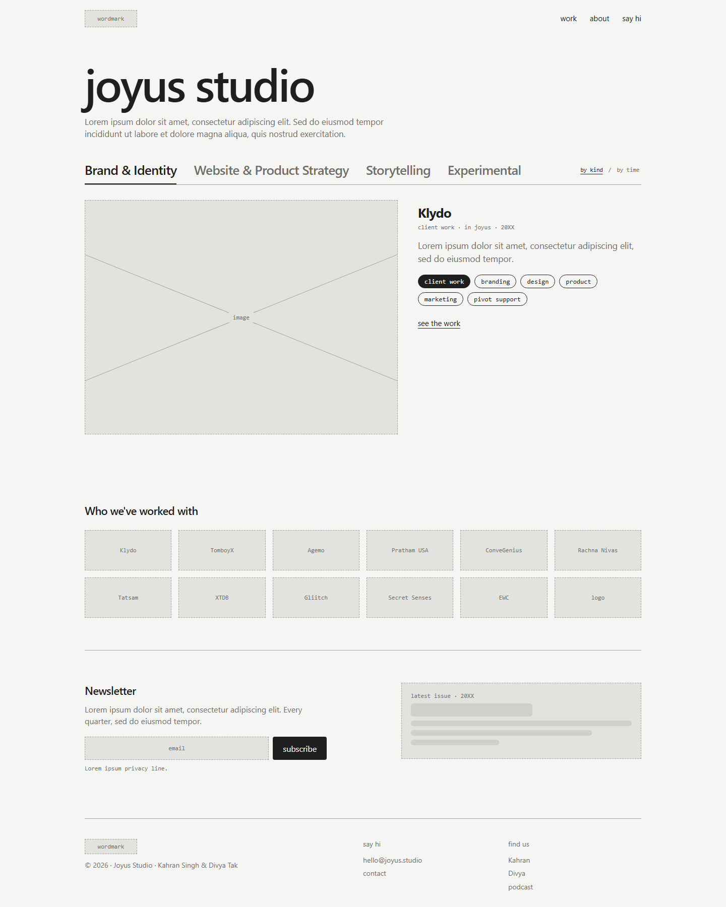
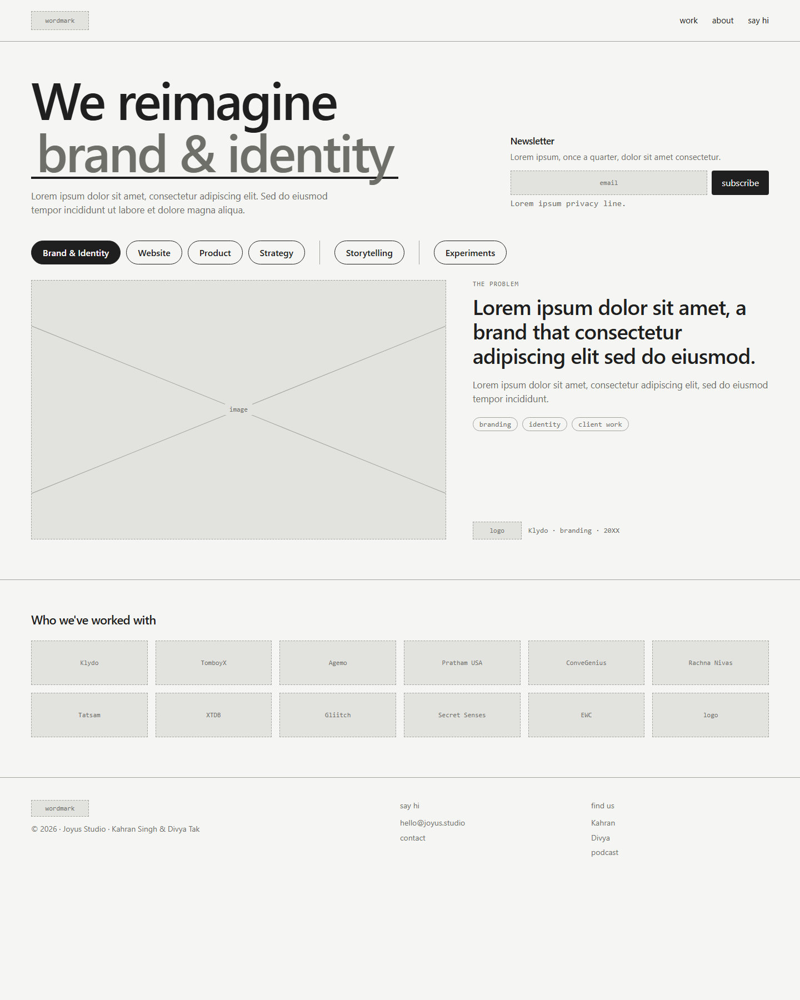

Study 02 · 22 September 2026 · written up 1 October
The wireframe, four rounds
One afternoon, four revisions, each written in answer to one note from Divya. Round 4 is what was committed (2c3e0d6). Rounds 1 to 3 were overwritten at the time; they are recovered here byte-for-byte from the session log, so each step can be opened, not just described.
Where it landed: round 4, live
It moves. Every ~5 s the next pill lights, the blank in "We reimagine ___" changes, and the panel shows that pill's current piece. After a full lap every pill steps to its next piece, so all 37 pieces get a turn. Click a pill to jump and pause for 15 s; click the active pill to step it.
Open round 4 on its own · CONTENT-NEEDS.md: picks and order per pill, content per block, open questions, all 37 draft sentences with grounding marks.
Round 1 · 16:50 · the brief, read literally
Note: the brief itself (Study 01).
- Four numbered sections with yellow notes explaining each choice.
- "joyus studio" as the headline, three big buttons under it, each with a one-line gloss.
- The same three as tabs further down, plus Experimental as a fourth tab only.
- A "by kind / by time" toggle, my reading of "historical layers".

Round 2 · 16:55 · a page, not a document
Can you structure it like an actual website wireframe rather than making these sections?
No, one line, whatever, doesn't need to exist. These are just tabs. There are no tabs, as in it just says those things that I said.
- The yellow annotation boxes go; it reads as a page.
- Buttons and glosses go; the options are one row of plain words.
- Panel: image left, client name, a line, tags, "see the work".

Round 3 · 17:01 · the headline becomes a sentence
What I want is for this to be full width. There is no by kind or by time option.
I want the newsletter thing to come right next to where Joyus Studio, whatever is written, is written. Also Joyus Studio should not be the headline. Let's say that we reimagine and then blank something is the option.
The brand and identity, website and product strategy should also be pills… It should be: Website · Product · Strategy. Storytelling should be a separate thing and experiments should be a separate thing.
Instead of the client name it should say some part of the problem statement… The logo of the client can come at the bottom… You can remove "See the work".
Clido will have five or six different things… Each one of those things should be its own page so we'll probably have a lot more pages.
- Full width; "by kind / by time" removed.
- "We reimagine brand & identity", the blank filled by the active pill.
- Newsletter moves up beside the headline.
- Pills: Brand & Identity · Website · Product · Strategy | Storytelling | Experiments.
- Panel leads with "the problem"; client logo and name at the bottom; no link label.
- One page per piece of work, not per client.

Round 4 · 17:07 · it moves, and every piece gets a turn
Okay, the website and product should be one. There shouldn't be separate lines between storytelling experiments and the rest of the stuff. No, not the problem and then some subset, but actually having a thing.
The image needs to take more of the space. Right now it's like 60/40. I want it to be like 70/30… I want more white space around the reimagined brand and identity. That needs to be a moving thing also.
…can we just write: "For client, we blah blah blah." Then it rotates to the website thing… When it comes back to brand and strategy, this time when it comes to product, it could have Claro product on it, right?
- Five pills, no dividers: Brand & Identity · Website & Product · Strategy · Storytelling · Experiments.
- Panel 70 / 30; text is one sentence, "For [client], we [did the thing]."
- Auto-rotation across pills, then across pieces within each pill; 37 pieces.
- More air around the headline.

Wrong turns, named
"Historical layers" became a toggle. Round 1 turned the Everything Bazaar idea into a "by kind / by time" switch on the homepage. She hadn't asked for a control; it was cut in round 3. The idea is now parked for the piece pages.
"A separate thing" read as a visual separator. Round 3 drew vertical lines between Strategy | Storytelling | Experiments and split Website from Product. Both were wrong: round 4 merged Website & Product and removed the lines.
"Part of the problem statement" read as a headline. Round 3 put a "THE PROBLEM" label over a lorem headline. What she meant was a sentence about what was done; round 4's "For Klydo, we…" is her own wording.
Rev 1 picked Secret Senses first for Brand & Identity, then Klydo. With rotation the first pick matters less than the set (recorded in CONTENT-NEEDS §2).
Open after round 4
- Service-shaped pills vs the July positioning, which says "do NOT organise by service". Needs Kahran and Divya. open
- What EWC is, and what its four pieces were. It leads Website & Product with no assets in the repo. open
- Unknown experiments: Brand Studio, Art stager, AI personal automation, Line before, contacts, photso. open
- Which clients can be named (logo wall, Klydo anonymisation). open
- The intent box and
looking.html: retire or move. open - Historical layers: proposed home is the piece pages. open
- Hero copy: the verb, the two-line description, newsletter name and platform (Buttondown recommended). open